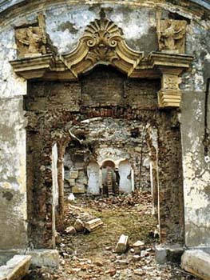

- stoker -
 |
It is dark Gothic at its best, a brilliant, imaginative and can't-put-down work of art. The atmosphere it creates is, in this writer's opinion, spookier than any Stephen King novel. While not the black-cloaked, centuries-old, fanged bloodsucker of literary fame, the infamy of the historical figure outperforms that of Stoker's creation. Odd that a name known for stirring nightmares actually belonged to a crusader of a religious cause. To not only the Turks but also to many of his own countrymen he was Vlad The Impaler, Vlad Die Tepes (pronounced Tee-pish). |
|
The vampire myth, particularly that of Dracula (in the West) and the impact of this character on the culture and myths of Romania. Vlad Dracula or Vlad the Impaler, the 15th century ruler of Wallachia (part of the modern Romania. ) Since the appearance of his namesake, Bram Stoker's vampire Count Dracula in 1897, the work of an ever-growing number of writers and film-makers has been inspired by Stoker's creation. This has resulted in an increasing awareness and interest in the fascinating history of Vlad Dracula. The Society provides a clearing house of information pertaining to the serious study of Dracula and related topics. |
If you want to know more about Dracula and Vlad Tepes click here. . Because we are very interrested in Bram Stoker's "Dracula" novel, one of our reasons to go to Romania was to see the places were Vlad Tepes (the original Dracula) had lived. During our trip I made a few beautiful photographs of the Vlad Tepes castles and his birth-house and more pictures of the stunishing landscapes of Romania. Although the photographs are enjoyable at their own, it's more likable when you know what you see, so I placed them in my travel-story completed with some information about Vlad Tepes.
|  |
|
97, "100 Jahre untot" - Ralph Kendlbacher last update 06 Dec. . However, since Bram Stoker's novel "Dracula", one of the greatest horror stories in English literature, the name Transylvania has acquired something of a mythical aura in the mind of the average. Both names, Transylvania and Dracula, are very often automatically associated with each other. Because of such imagery many Westerners think that Transylvania exists only in the minds of fiction writers and film makers. |
read more at: http://www.literature.org/authors/stoker-bram/dracula/